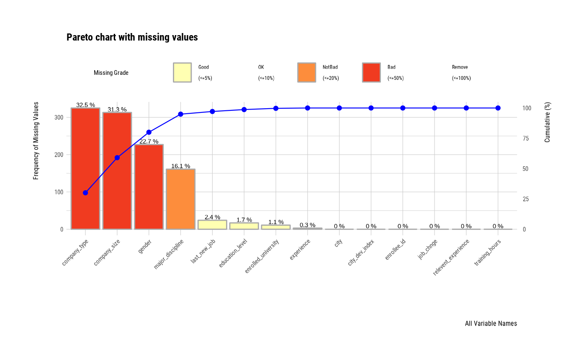
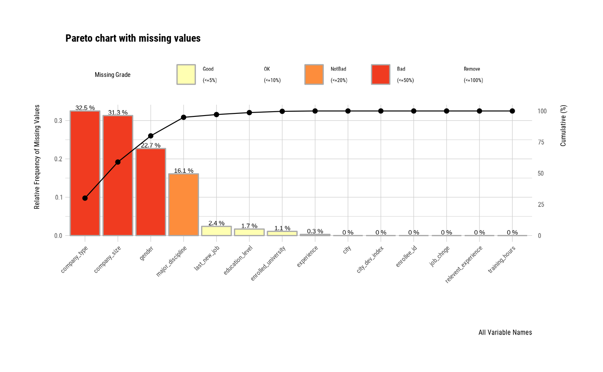
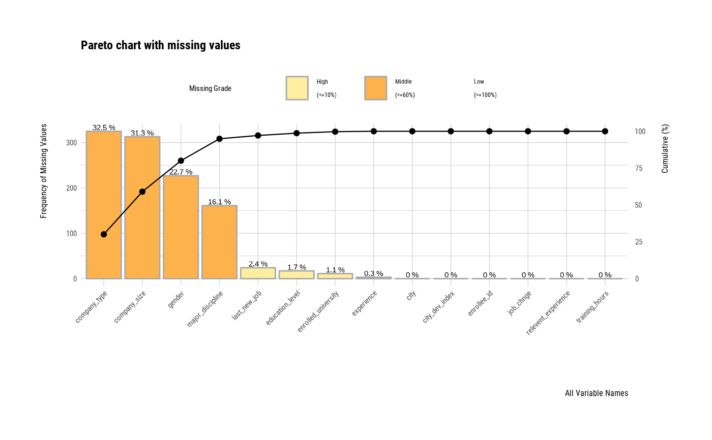
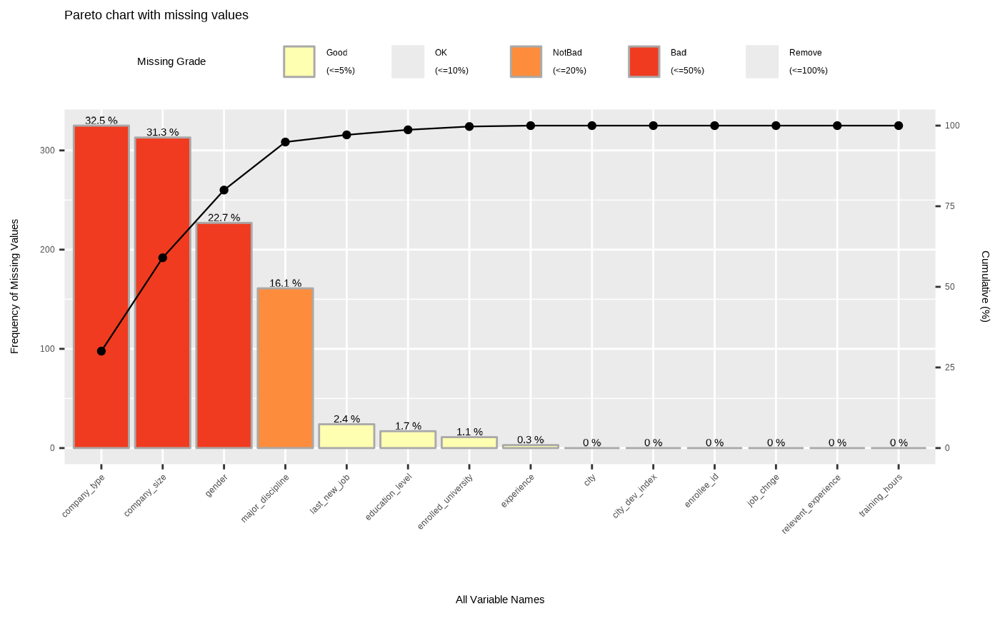

Visualize pareto chart for variables with missing value.
plot_na_pareto( x, only_na = FALSE, relative = FALSE, main = NULL, col = "black", grade = list(Good = 0.05, OK = 0.4, Bad = 0.8, Remove = 1), plot = TRUE, typographic = TRUE )
Arguments
| x | data frames, or objects to be coerced to one. |
|---|---|
| only_na | logical. The default value is FALSE. If TRUE, only variables containing missing values are selected for visualization. If FALSE, all variables are included. |
| relative | logical. If this argument is TRUE, it sets the unit of the left y-axis to relative frequency. In case of FALSE, set it to frequency. |
| main | character. Main title. |
| col | character. The color of line for display the cumulative percentage. |
| grade | list. Specifies the cut-off to set the grade of the variable according to the ratio of missing values. The default values are Good: [0, 0.05], OK: (0.05, 0.4], Bad: (0.4, 0.8], Remove: (0.8, 1]. |
| plot | logical. If this value is TRUE then visualize plot. else if FALSE, return aggregate information about missing values. |
| typographic | logical. Whether to apply focuses on typographic elements to ggplot2 visualization. The default is TRUE. if TRUE provides a base theme that focuses on typographic elements using hrbrthemes package. |
Examples
# Generate data for the example carseats <- ISLR::Carseats carseats[sample(seq(NROW(carseats)), 20), "Income"] <- NA carseats[sample(seq(NROW(carseats)), 5), "Urban"] <- NA # Diagnose the data with missing_count using diagnose() function library(dplyr) carseats %>% diagnose %>% arrange(desc(missing_count))#> # A tibble: 11 x 6 #> variables types missing_count missing_percent unique_count unique_rate #> <chr> <chr> <int> <dbl> <int> <dbl> #> 1 Income numeric 20 5 98 0.245 #> 2 Urban factor 5 1.25 3 0.0075 #> 3 Sales numeric 0 0 336 0.84 #> 4 CompPrice numeric 0 0 73 0.182 #> 5 Advertising numeric 0 0 28 0.07 #> 6 Population numeric 0 0 275 0.688 #> 7 Price numeric 0 0 101 0.252 #> 8 ShelveLoc factor 0 0 3 0.0075 #> 9 Age numeric 0 0 56 0.14 #> 10 Education numeric 0 0 9 0.0225 #> 11 US factor 0 0 2 0.005# Visualize pareto chart for variables with missing value. plot_na_pareto(carseats)plot_na_pareto(airquality)# Diagnose the data with missing_count using diagnose() function if (!requireNamespace("mice", quietly = TRUE)) { stop("Package \"mice\" needed for this function to work. Please install it.", call. = FALSE) } mice::boys %>% diagnose %>% arrange(desc(missing_count))#> # A tibble: 9 x 6 #> variables types missing_count missing_percent unique_count unique_rate #> <chr> <chr> <int> <dbl> <int> <dbl> #> 1 tv integer 522 69.8 19 0.0254 #> 2 gen ordered 503 67.2 6 0.00802 #> 3 phb ordered 503 67.2 7 0.00936 #> 4 hc numeric 46 6.15 205 0.274 #> 5 bmi numeric 21 2.81 504 0.674 #> 6 hgt numeric 20 2.67 483 0.646 #> 7 wgt numeric 4 0.535 524 0.701 #> 8 reg factor 3 0.401 6 0.00802 #> 9 age numeric 0 0 683 0.913# Change the main title. plot_na_pareto(mice::boys, relative = TRUE, only_na = TRUE, main = "Pareto Chart for mice::boys")# Return the aggregate information about missing values. plot_na_pareto(mice::boys, only_na = TRUE, plot = FALSE)#> # A tibble: 8 x 5 #> variable frequencies ratio grade cumulative #> <fct> <int> <dbl> <fct> <dbl> #> 1 tv 522 0.698 Bad 32.2 #> 2 gen 503 0.672 Bad 63.2 #> 3 phb 503 0.672 Bad 94.2 #> 4 hc 46 0.0615 OK 97.0 #> 5 bmi 21 0.0281 Good 98.3 #> 6 hgt 20 0.0267 Good 99.6 #> 7 wgt 4 0.00535 Good 99.8 #> 8 reg 3 0.00401 Good 100